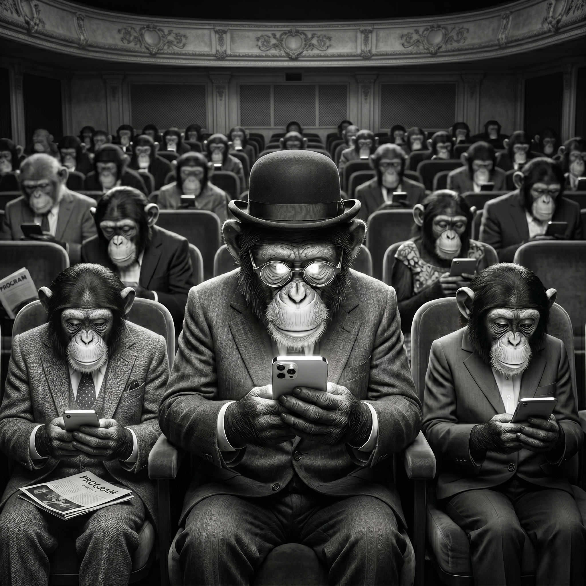

Поздравляем. Только что вы добровольно потратили еще 45 секунд своей единственной жизни на то, чтобы отсканировать этот код.
Вы доверились незнакомцам в серых костюмах. Вы поддались любопытству, продиктованному стадным инстинктом.
В этот самый момент действие на сцене продолжается, но вы предпочли смотреть в светящийся экран. Ваши секунды успешно зачислены на счет Серых господ. Продолжайте экономить время для нас.